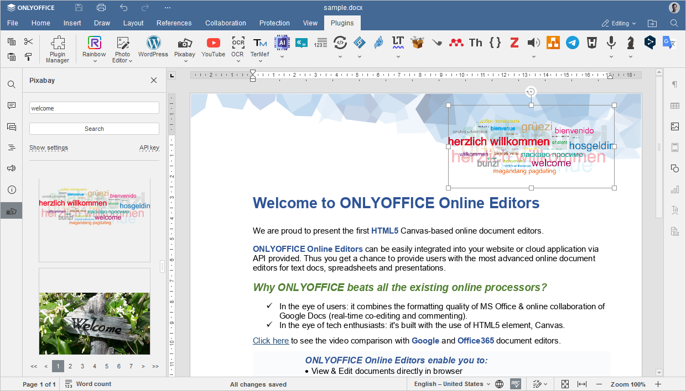

Pixabay
Dodatak Pixabay omogućava vam da dodajete slike u dokument iz otvorene kolekcije servisa Pixabay, koji nudi slike bez autorskih prava.
Dodatak je kompatibilan sa self-hosted i desktop verzijama ONLYOFFICE editora i može se ručno dodati u ONLYOFFICE instance pomoću Plugin Manager-a.
Instalacija
Da biste instalirali dodatak Pixabay,
- Idite na karticu Plugins.
- Otvorite Plugin Manager.
- Pronađite na marketplace-u i kliknite na dugme Install ispod.
- Kliknite na ikonu Pixabay na kartici Plugins.
- Nastavite sa podešavanjem dodatka.
Za više detalja pogledajte ONLYOFFICE API dokumentaciju.
Podešavanje
- Prijavite se na svoj Pixabay nalog ili registrujte novi.
- Idite na odeljak Search Images na Pixabay API stranici.
-
Skrolujte nadole do liste Parameters i kopirajte link ispod parametra Key. Ako niste prijavljeni, kliknite na Login pored parametra Key.

- Nalepite ključ u polje API key na levom panelu kartice Plugins u Document Editor-u.
- Kliknite na Save.

Kako se koristi
- Idite na karticu Plugins.
- Kliknite na ikonu Pixabay.
- Na levom panelu koji se otvori unesite ključnu reč koju povezujete sa slikom koju tražite.
-
Koristite dugme Show settings da biste precizirali pretragu po kriterijumima Language, Image type, Orientation i Category. Kliknite na Hide settings da biste smanjili deo za pretragu.

- Kliknite na Search.
- Skrolujte kroz rezultate pretrage i kliknite na sliku da biste je dodali u dokument.
